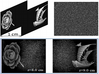
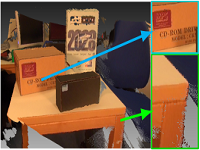
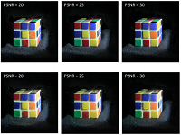
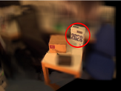
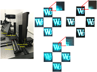
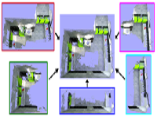
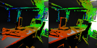
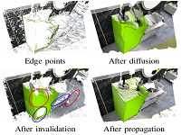
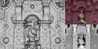
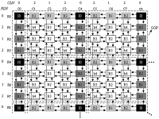

About Me
I'm currently working in the College of Communication Engineering at Jilin University, China. My area of research is three-dimensional (3D) computer vision, autostereoscopic display, and pattern recognition, with a focus on image-based 3D reconstruction and integral imaging.
教育背景
-
博士 信息学专业
Computer Graphics Group - Prof. Hendrik P. A. Lensch, Tübingen University, Germany
Thesis: Dense and Globally Consistent Multi-View Stereo
-
硕士 通信与信息系统专业
Supervised by Prof. Shigang Wang, Jilin University, China
Thesis: Study on Coding of Elemental Images in Integral Imaging
-
学士 通信工程专业
Jilin University, China
Thesis: Stereo Video Object Segmentation
科研项目
-
面向视频场景光场显示的边缘驱动与模糊理论联合视图生成研究
国家自然科学基金(NSFC)青年科学基金项目
61901187, 28万元, 负责人
-
LED真三维集成成像显示技术研究
“十三五”国家重点研发计划项目子课题
2017YFB0404804, 154万元, 参加人
-
高密度小间距LED大屏幕真三维集成成像显示系统
吉林省省校共建计划专项（战略性新兴产业培育类）
SXGJXX2017-7, 300万元, 参加人
-
大数据环境中现实场景智能视频分析监控技术的研究
吉林省科技发展计划项目（重点高新）
20150204006GX, 26万元, 参加人
-
自由立体多视点LED全彩色大屏幕显示系统
长春市科技发展计划项目重大科技公关项目
14KG007, 25万元, 参加人
-
Scene Flow with Online Calibration
与戴姆勒股份公司合作
1059249581, 参加人
-
Dense Stereo With Intrinsic Calibration
与戴姆勒股份公司合作
1059241901, 参加人
教授课程
电子测量原理, 数字电路与逻辑设计, 多媒体技术, 计算摄像学, C++面向对象编程综合实验.
代表性论文
-
Robust Multidepth Object Encryption Based on a Computer-Generated Hologram with a Cascaded Structure
Applied Optics 58(36):9921-9930, 2019
Meilan Piao, Shigang Wang, Yan Zhao, Jian Wei, Yu Zhao, Nam Kim

-
Video-Based, Occlusion-Robust Multi-View Stereo Using Inner-Bboundary Depths of Textureless Areas
International Conference on Acoustics, Speech, and Signal Processing (ICASSP), 2019
Jian Wei, Shigang Wang, Yan Zhao

-
3D View Image Reconstruction in Computational Integral Imaging Using Scale Invariant Feature Transform and Patch Matching
Optics Express 27(17):24207-24222, 2019
Henan Li, Shigang Wang, Yan Zhao, Jian Wei, Meilan Piao

-
Synthetic Aperture Integral Imaging Using Edge Depth Maps of Unstructured Monocular Video
Optics Express 26(26):34894-34908, 2018
Jian Wei, Shigang Wang, Yan Zhao, Meilan Piao

-
Performance Metric and Objective Evaluation for Displayed 3D Images Generated by Different Lenslet Arrays
Optics Communications 426:635-641, 2018
Wei Wu, Shigang Wang, Meilan Piao, Yan Zhao, Jian Wei

-
Dense and Scalable Reconstruction from Unstructured Videos with Occlusions
International Symposium on Vision, Modeling and Visualization (VMV), 2017
Jian Wei, Benjamin Resch, Hendrik P. A. Lensch

-
Real Time Direct Visual Odometry for Flexible Camera Rigs
Asian Conference on Computer Vision (ACCV), 2016
Benjamin Resch, Jian Wei, Hendrik P. A. Lensch

-
Dense and Occlusion-Robust Multi-View Stereo for Unstructured Videos
Conference on Computer and Robot Vision (CRV), 2016
Jian Wei, Benjamin Resch, Hendrik P. A. Lensch

-
Multi-View Depth Map Estimation with Cross-View Consistency
British Machine Vision Conference (BMVC), 2014
Jian Wei, Benjamin Resch, Hendrik P. A. Lensch

-
Hierarchical Prediction Structure for Subimage Coding and Multithreaded Parallel Implementation in Integral Imaging
Applied Optics 50(12):1707-1716, 2011
Jian Wei, Shigang Wang, Yan Zhao, Fushou Jin

其它论文
-
Fatigue State Detection Based on Multi-Index Fusion and State Recognition Network
IEEE Access 7:64136-64147, 2019
Yingyu Ji, Shigang Wang, Yan Zhao, Jian Wei, Yang Lu
-
Depth from Efficient Combination of Local Cues for Flexible-Sensing Autostereoscopic Display
Digital Holography & 3-D Imaging, 2019
Jian Wei, Shigang Wang, Yan Zhao, Meilan Piao
-
A New Method to Expand the Showing Range of a Virtual Reconstructed Image in Integral Imaging
International Conference on Image and Graphics (ICIG), 2019
Lizhong Zhang, Shigang Wang, Jian Wei
-
Static Image Facial Expression Recognition Based on Separability Assessment of Discrete SepInarable Shearlet Transform
Journal of Electronic Imaging 28(2):021006-1:14, 2019
Yang Lu, Shigang Wang, Wenting Zhao, Yan Zhao, Jian Wei
-
Hole Filling Algorithm for Image Array of One-Dimensional Integrated Imaging
Proc. SPIE 11187, Optoelectronic Imaging and Multimedia Technology VI, 2019
Yixue Han, Shigang Wang, Jian Wei, Chenxi Song
-
Eye and Mouth State Detection Algorithm Based on Contour Feature Extraction
Journal of Eletronic Imaging 27(5):051205-1:8, 2018
Yingyu Ji, Shigang Wang, Yang Lu, Jian Wei, Yan Zhao
-
Hexagonal Elemental Image Array Generation
Journal of Jilin University (Engineering and Technology Edition) 48(1):290-294, 2018
Wei Wu, Shigang Wang, Yan Zhao, Jian Wei, Cheng Zhong
-
Eye State Analysis Algorithm Based on a Weighted Color Difference Matrix
International Conference on Graphics and Image Processing (ICGIP), 2018
Yingyu Ji, Shigang Wang, Yan Zhao, Jian Wei, Yang Lu
-
A Novel Approach of Facial Expression Recognition Based on Shearlet Transform
IEEE Global Conference on Signal and Information Processing (GlobalSIP), 2017
Yang Lu, Shigang Wang, Wenting Zhao, Yan Zhao, Jian Wei
-
Elemental Image Generation Based on Maya
Journal of Jilin University (Engineering and Technology Edition) 47(4):1314-1320, 2017
Wei Wu, Shigang Wang, Hongzhi Wang, Yan Zhao, Cheng Zhong, Jian Wei
-
Stereo Image Quality Evaluation Method of Human Depth Perception
Journal of Image and Graphics 9:1758-1762, 2011
Shengyun Dongye, Shigang Wang, Jian Wei, Liwei Chen, Yuanzhi Lv
-
Multi-Object Tracking Based on Multi-Feature Fusion with Adaptive Weights
IET International Communication Conference on Wireless Mobile & Computing (CCWMC), 2009
Liwei Chen, Shigang Wang, Jian Wei
-
Multi-View Video Coding with Adaptive Selection of Prediction Mode Based on Hierarchical B Picture
IET International Communication Conference on Wireless Mobile & Computing (CCWMC), 2009
Jian Wei, Shigang Wang, Liwei Chen
-
Automatic Segmentation of Video Object Under Static Background
WRI World Congress on Computer Science and Information Engineering (CSIE), 2009
Liwei Chen, Shigang Wang, Jian Wei, Tianxiao Guan
-
Adaptive Stereo Video Object Segmentation Based on Depth and Spatio-Temporal Information
WRI World Congress on Computer Science and Information Engineering (CSIE), 2009
Jian Wei, Shigang Wang, Liwei Chen, Tianxiao Guan
-
Research on Disparity and Background-Based Object Segmentation in Stereo Video
IEEE International Joint Conferences on Computer, Information, and Systems Sciences, and Engineering (CISSE), 2008
Tianxiao Guan, Shigang Wang, Hexin Chen, Jian Wei, Liwei Chen
授权专利
-
LED-Based Integral Imaging Display System as Well as Its Control Method and Device
美国专利, No. US 10560687 B2, 02/11/2020
Shigang Wang, Wei Wu, Jian Wei, Yan Zhao, Meilan Piao, Tianshu Li, Henan Li, Lizhong Zhang, Bowen Jia